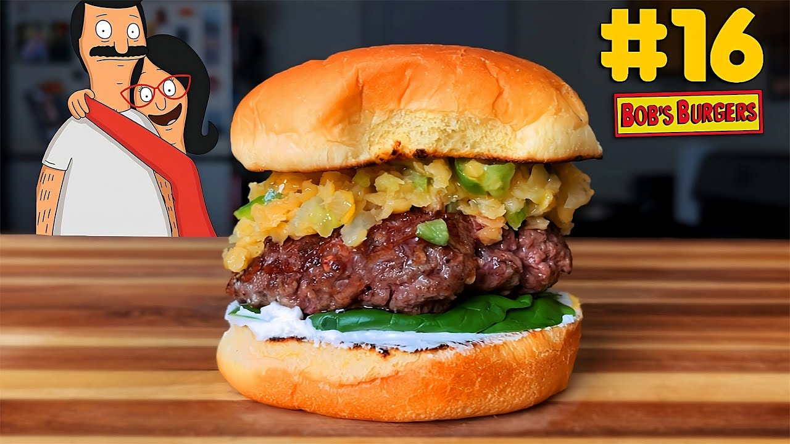

Jack-O'-Lentil Burger

"An all-beef patty topped with a mixture of orange lentils, serrano chiles, garlic, and onions. A light spread of herb-coated chevre
cheese and some fresh spinach finish it off with a rich, over-the-top flavor. We're talking about Over the Top, the movie--this
hamburger tastes like arm wrestling. Adding ginger, honey, garlic, serrano chiles, and onions makes the lentils come alive with
flavor (once the lentils come to life, you must feed them three times a day)."
Ingredients
- 1 cup dried orange lentils
- 5 cloves garlic, minced
- 1/2 green bell pepper, diced
- 2 celery stalks, finely diced
- 1/2 onion, diced
- 3 serrano chiles, seeded and finely diced
- Olive oil
- 1 Tbsp honey
- 2 tsp ground ginger
- 1 pound ground beef
- 4 buns
- 1 4-ounce log chevre, room temperature
- 1 bag baby spinach
Steps
- Cook your lentils according to package directions. Put them in water, and simmer until firm but not mushy. It's super easy to
overcook them--don't do that.
- Saute the garlic, pepper, celery, onion, and chiles in olive oil until aromatic.
- When the lentils are cooked, drain them, and add the honey and sauteed vegetables. Add in the ginger and thoroughly combine.
- Form 4 patties and season both sides with salt and pepper, then cook the burgers.
- BUILD YOUR BURGER: Spread the chevre on the bottom bun, add a handful of baby spinach, the burger, a heaping pile of lentils, and
the top bun. Give this burger out at Halloween instead of candy.